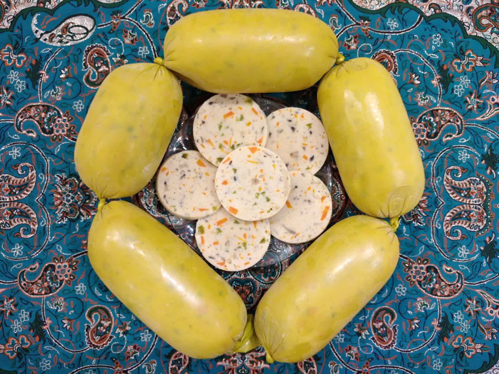
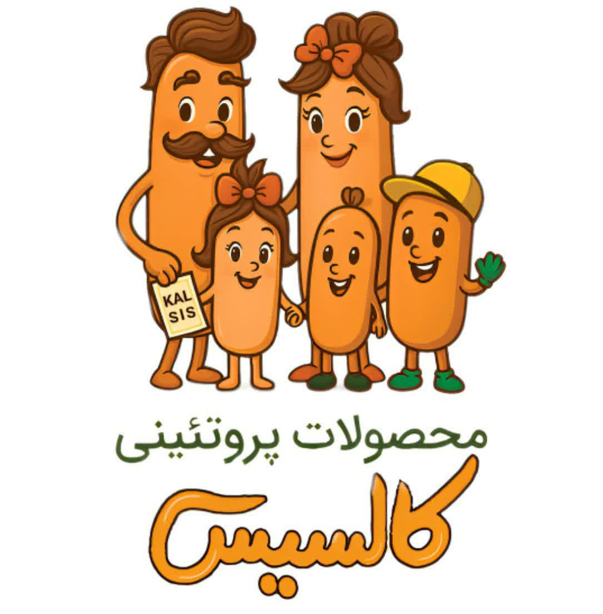

مواد اولیهٔ تازه
گوشت تازه و مواد اولیهای که با دقت برای هر نوبت تولید انتخاب میکنیم.
دستساز، تازه، با عشق
بعضی طعمها، مزهٔ دور هم بودن میدهند.
ما در کالسیس، گوشت تازه و ادویههای طبیعی را با حوصلهٔ یک آشپزخانهٔ خانگی کنار هم میگذاریم؛ برای سفرهٔ شما.
خونگی درست میکنیم، مثل غذای خودمون.از یزد، با عطر ادویه و کلی عشق

یه لمس کوچیک، یه ذره شیطنت!
از آشپزخانهٔ کالسیس
از یک ساندویچ ساده تا میز دورهمی؛
برای هر لحظه، یک طعم دوستداشتنی.
عکسهای مجموعه، با عنوان «از خانوادهٔ…» مشخص شدهاند. قیمت و موجودی روز را در ایتا بپرسید.

قصهٔ ما از یک آشپزخانه شروع شد
در شهر بادگیرها و ترمههای رنگارنگ، ما هم قصهٔ خودمان را داریم؛ قصهٔ علاقه به آشپزی و لذتِ درست کردن چیزی که دوستش داریم.
کالسیس یک تولیدی خانگی است. اینجا از انتخاب گوشت و ادویه تا آمادهکردن بستهها، هر مرحله با دقت و حوصله انجام میشود. دوست داریم طعم محصولاتمان، یادآور صمیمیت غذاهای خانگی باشد.
سادگی، راز خوشمزگی ماست
گوشت تازه و مواد اولیهای که با دقت برای هر نوبت تولید انتخاب میکنیم.
ادویههای طبیعی و ترکیبهایی که به هر محصول، طعم مخصوص خودش را میدهند.
آمادهسازی با دقت، در محیطی پاکیزه؛ با همان توجهی که برای غذای خانه داریم.
از سؤال دربارهٔ ترکیبات تا هماهنگی سفارش، خودمان در کنارتان هستیم.
از اینجا تا سفرهٔ شما
فعلاً در ایتا با هم گپ میزنیم و سفارشتان را هماهنگ میکنیم.
محصول دلخواه و مقدارش را انتخاب کن تا متن سفارشت آماده شود.
متن را کپی کن و از راه ارتباطی معرفیشده در کانال، قیمت و موجودی را بپرس.
بعد از تأیید سفارش، زمان آمادهسازی و شیوهٔ تحویل را با هم هماهنگ میکنیم.
یک جمع خوشسلیقه بهزودی
باشگاه مشتریان ما در راه است؛ جایی برای خبرهای تازه و پیشنهادهای ویژه.
تا آن روز، در کانال ایتا کنار هم هستیم.
برای دریافت قیمت و موجودی روز، به کانال ایتای کالسیس سر بزنید و از راه ارتباطی آن با ما هماهنگ کنید. سفارش بعد از تأیید قیمت، مقدار و زمان تحویل نهایی میشود.
کالسیس یک کسبوکار تولید خانگی در یزد است. محصولات با گوشت تازه، ادویههای طبیعی و بدون رنگ و نگهدارندهٔ مصنوعی تهیه میشوند.
قبل از سفارش، ترکیبات کامل محصول را از ما بپرسید؛ بعضی محصولات پنیر، تخم بلدرچین یا سویق دارند. برای انتخاب محصول کودک نیز سن و حساسیتهای غذایی را در نظر بگیرید و ترکیبات را بررسی کنید.
شیوه و محدودهٔ تحویل هنگام ثبت سفارش هماهنگ میشود. شرایط نگهداری، تاریخ مصرف و روش آمادهسازی هر محصول را هنگام دریافت از ما بپرسید و مطابق توضیحات بستهبندی عمل کنید.
هنوز نه؛ در حال آمادهکردن آن هستیم. خبر راهاندازی و جزئیات عضویت را در کانال ایتای کالسیس اعلام میکنیم.
یک سلام، شروع یک آشنایی خوشمزه